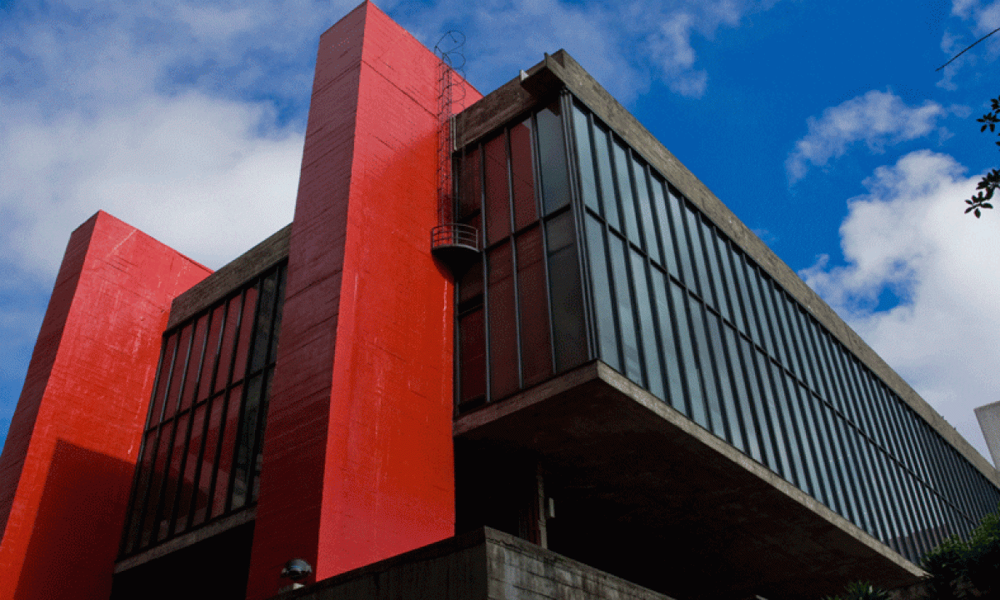
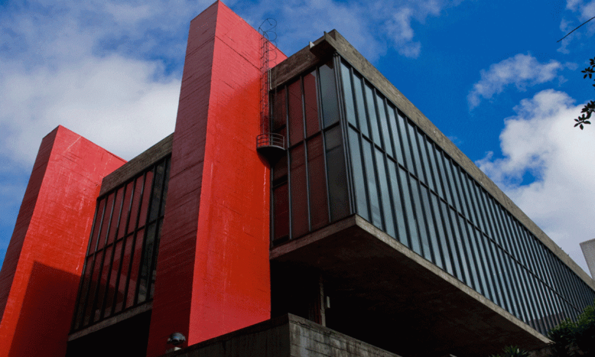

MASP
Museu de Arte de São Paulo
Um dos museus mais importantes da América Latina, famoso pelo vão livre e pelo acervo permanente com obras icônicas de diversas épocas.
Informações Essenciais
- Local: Avenida Paulista, 1578 — São Paulo
- Horários: Terça a domingo, 10h–18h (Quartas até 20h)
- Preço: R$ 30 inteira / R$ 15 meia — Quartas grátis
- Duração média: 1h a 2h
- Acessibilidade: Elevadores e rampas disponíveis
Galeria

 

Sobre o Passeio
O MASP é um dos símbolos arquitetônicos de São Paulo, famoso pelo vão livre de 74 metros que se tornou cartão-postal. Seu acervo reúne obras de artistas como Van Gogh, Portinari, Anita Malfatti e Renoir.
Além das exposições permanentes, o museu recebe mostras temporárias importantes, eventos culturais e visitas mediadas.